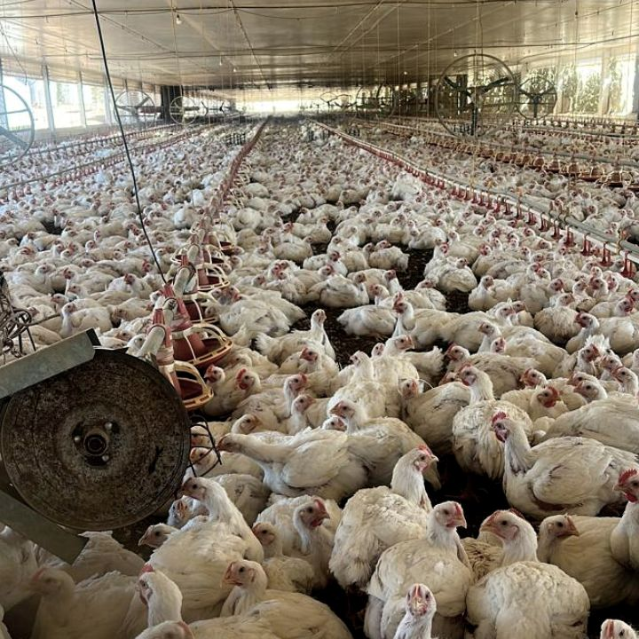

Home · Solutions · Granja Digital
AgriculturePoultrySaaS
Granja Digital
Real-time poultry house and flock management. Granja Digital replaces the paper notebook with precision poultry farming — connecting the farm worker in the barn, the owner in the office and the veterinarian remotely, with mortality and feed conversion tracking from placement to processing.
The client's pain point
The ~45-day cycle demands precision. Without a system, operations stay "in the dark": data lost on paper, calculation errors, surprises on day 45 and history that's hard to prove to the integrator.
- Data scattered across notebooks and spreadsheets
- Rework at closing and risk of chargebacks
- No shared view between farm worker, owner and veterinarian
How we arrived at the solution
01
Discovery
Field immersion (e.g. Minas Gerais): arrival, weighing, feed, mortality, downtime and closing with integrators.
02
Scoping
Profiles (owner, admin, farm worker, veterinarian), CA/GPD/IEP KPIs, compliance and phase-based prioritization.
03
Development
Platform with offline app in the barn, dashboards and standardized reports — technology serving real operations.
What the system does
Offline mode in the barn
Record water, feed, mortality and weighing without internet. Sync happens later.
Mortality and feed conversion
Real-time CA, GPD and IEP with target traffic lights throughout the flock.
Incidents with media
Photo or video of equipment or health issues, with notification to the administrator.
Reports for integrators
Cycle history generates standardized closing (e.g. VIBRA) in a few clicks — no retyping day-45 data.
Feed, water and documents
Water meter, invoice and GTA linkage directly in the cycle, with full flock traceability.
Multi-farm management
Multiple barns and properties in a single login, with profile-based views.
Value for the entire chain
Farm worker
Mobile screens, quick logging, downtime checklist and evidence — even offline.
Owner and administrator
KPIs, mortality alerts, pending items and flock documents in one place.
Veterinarian and integrator
Remote dashboard, traceable guidance and breed line targets as reference.
Proof of value
Tracking weight and mortality during the cycle enables quick corrections to environment and management. Improving feed conversion (CA) by just 1 point can contribute to meaningful returns per flock — results vary by management, genetics and market.

LinkedIn
Real innovation doesn't happen only in air-conditioned offices
The Veltro Digital team was in rural Minas Gerais capturing requirements on site for farm digitization — accelerating decisions, ensuring auditable data and meeting agribusiness compliance requirements.
View full post on LinkedIn →